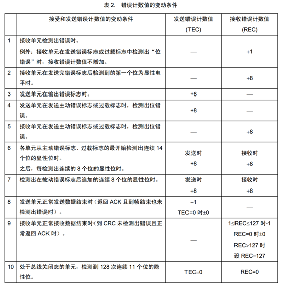

can简介
总线特征
CAN总线（Controller Area Network Bus）控制器局域网总线
CAN总线是由BOSCH公司开发的一种简洁易用、传输速度快、易扩展、可靠性高的串行通信总线，广泛应用于汽车、嵌入式、工业控制等领域
CAN总线特征：
- 两根通信线（CAN_H、CAN_L），线路少
- 差分信号通信，抗干扰能力强
- 高速CAN（ISO11898）：125k~1Mbps, <40m
- 低速CAN（ISO11519）：10k~125kbps, <1km
- 异步，无需时钟线，通信速率由设备各自约定
- 半双工，可挂载多设备，多设备同时发送数据时通过仲裁判断先后顺序
- 11位/29位报文ID，用于区分消息功能，同时决定优先级
- 可配置1~8字节的有效载荷
- 可实现广播式和请求式两种传输方式
- 应答、CRC校验、位填充、位同步、错误处理等特性
Can硬件电路
- 每个设备通过CAN收发器挂载在CAN总线网络上
- CAN控制器引出的TX和RX与CAN收发器相连，CAN收发器引出的CAN_H和CAN_L分别与总线的CAN_H和CAN_L相连
- 高速CAN使用闭环网络，CAN_H和CAN_L两端添加120Ω的终端电阻（防止回波反射）
- 低速CAN使用开环网络，CAN_H和CAN_L其中一端添加2.2kΩ的终端电阻
Can电平标准
CAN总线采用差分信号，即两线电压差（VCAN_H-VCAN_L）传输数据位
高速CAN规定：
电压差为0V时表示逻辑1（隐性电平）
电压差为2V时表示逻辑0（显性电平）
低速CAN规定：
电压差为-1.5V时表示逻辑1（隐性电平）
电压差为3V时表示逻辑0（显性电平）
Can收发器
此时txd为1，无事发生，若txd为0，VCC拉高，GND拉低，使其出现电压差。
can帧格式
5种帧格式：
数据帧
帧起始是打破宁静，由于空闲是隐形，所有设备都不碰总线，故需发送显性0告诉我要开始了，继续发送11位报文id，rtr为远程请求标志位，用于区分数据帧还是遥控帧（数据帧0，显示帧1），ide为id扩展标志位，区分标准还是扩展（标准0），r0为保留位，以后用于升级，
dlc数据段长度，crc界定符必须为0，ack若接收成功，则会拉低，读取0，再拉高，反之直接拉高。
各字段含义
- SOF（Start of Frame）：帧起始，表示后面一段波形为传输的数据位
- ID（Identify）：标识符，区分功能，同时决定优先级
- RTR（Remote Transmission Request ）：远程请求位，区分数据帧和遥控帧
- IDE（Identifier Extension）：扩展标志位，区分标准格式和扩展格式
- SRR（Substitute Remote Request）：替代RTR，协议升级时留下的无意义位
- r0/r1（Reserve）：保留位，为后续协议升级留下空间
- DLC（Data Length Code）：数据长度，指示数据段有几个字节
- Data：数据段的1~8个字节有效数据
- CRC（Cyclic Redundancy Check）：循环冗余校验，校验数据是否正确
- ACK（Acknowledgement）：应答位，判断数据有没有被接收方接收
- CRC/ACK界定符：为应答位前后发送方和接收方释放总线留下时间
- EOF（End of Frame ）：帧结束，表示数据位已经传输完毕
遥控帧
遥控帧无数据段，RTR为隐性电平1，其他部分与数据帧相同(数据帧优先)
错误帧
总线上所有设备都会监督总线的数据，一旦发现“位错误”或“填充错误”或“CRC错误”或“格式错误”或“应答错误” ，这些设备便会发出错误帧来破坏数据，同时终止当前的发送设备
过载帧
当接收方收到大量数据而无法处理时，其可以发出过载帧，延缓发送方的数据发送，以平衡总线负载，避免数据丢失
帧间隔
将数据帧和遥控帧与前面的帧分离开
位填充
位填充规则：发送方每发送5个相同电平后，自动追加一个相反电平的填充位，接收方检测到填充位时，会自动移除填充位，恢复原始数据
例如：
位填充作用：
- 增加波形的定时信息，利于接收方执行“再同步”，防止波形长时间无变化，导致接收方不能精确掌握数据采样时机
- 将正常数据流与“错误帧”和“过载帧”区分开，标志“错误帧”和“过载帧”的特异性
- 保持CAN总线在发送正常数据流时的活跃状态，防止被误认为总线空闲
接收方数据采样
- CAN总线没有时钟线，总线上的所有设备通过约定波特率的方式确定每一个数据位的时长
- 发送方以约定的位时长每隔固定时间输出一个数据位
- 接收方以约定的位时长每隔固定时间采样总线的电平，输入一个数据位
- 理想状态下，接收方能依次采样到发送方发出的每个数据位，且采样点位于数据位中心附近
但是传输时候由于外界原因仍然会出现误差，便需要人为去控制误差
位时序
为了灵活调整每个采样点的位置，使采样点对齐数据位中心附近，CAN总线对每一个数据位的时长进行了更细的划分，分为同步段（SS）、传播时间段（PTS）、相位缓冲段1（PBS1）和相位缓冲段2（PBS2），每个段又由若干个最小时间单位（Tq）构成
硬同步
- 每个设备都有一个位时序计时周期，当某个设备（发送方）率先发送报文，其他所有设备（接收方）收到SOF的下降沿时，接收方会将自己的位时序计时周期拨到SS段的位置，与发送方的位时序计时周期保持同步
- 硬同步只在帧的第一个下降沿（SOF下降沿）有效
- 经过硬同步后，若发送方和接收方的时钟没有误差，则后续所有数据位的采样点必然都会对齐数据位中心附近
再同步
- 若发送方或接收方的时钟有误差，随着误差积累，数据位边沿逐渐偏离SS段，则此时接收方根据再同步补偿宽度值（SJW）通过加长PBS1段，或缩短PBS2段，以调整同步
- 再同步可以发生在第一个下降沿之后的每个数据位跳变边沿
仲裁
多设备同时发送遇到的问题
- CAN总线只有一对差分信号线，同一时间只能有一个设备操作总线发送数据，若多个设备同时有发送需求，该如何分配总线资源？
- 解决问题的思路：制定资源分配规则，依次满足多个设备的发送需求，确保同一时间只有一个设备操作总线
资源分配规则
先占先得
- 若当前已经有设备正在操作总线发送数据帧/遥控帧，则其他任何设备不能再同时发送数据帧/遥控帧（可以发送错误帧/过载帧破坏当前数据）
- 任何设备检测到连续11个隐性电平，即认为总线空闲，只有在总线空闲时，设备才能发送数据帧/遥控帧
- 一旦有设备正在发送数据帧/遥控帧，总线就会变为活跃状态，必然不会出现连续11个隐性电平，其他设备自然也不会破坏当前发送
- 若总线活跃状态其他设备有发送需求，则需要等待总线变为空闲，才能执行发送需求
非破坏形仲裁
若多个设备的发送需求同时到来或因等待而同时到来，则CAN总线协议会根据ID号（仲裁段）进行非破坏性仲裁，ID号小的（优先级高）取到总线控制权，ID号大的（优先级低）仲裁失利后将转入接收状态，等待下一次总线空闲时再尝试发送
实现非破坏性仲裁需要两个要求：
- 线与特性：总线上任何一个设备发送显性电平0时，总线就会呈现显性电平0状态，只有当所有设备都发送隐性电平1时，总线才呈现隐性电平1状态，即：0 & X & X = 0，1 & 1 & 1 = 1
- 回读机制：每个设备发出一个数据位后，都会读回总线当前的电平状态，以确认自己发出的电平是否被真实地发送出去了，根据线与特性，发出0读回必然是0，发出1读回不一定是1
数据帧和遥控帧的优先级
数据帧和遥控帧ID号一样时，数据帧的优先级高于遥控帧
错误处理
错误共有5种： 位错误、填充错误、CRC错误、格式错误、应答错误
错误状态
- 主动错误状态的设备正常参与通信并在检测到错误时发出主动错误帧
- 被动错误状态的设备正常参与通信但检测到错误时只能发出被动错误帧
- 总线关闭状态的设备不能参与通信
- 每个设备内部管理一个TEC和REC，根据TEC和REC的值确定自己的状态
错误计数器
